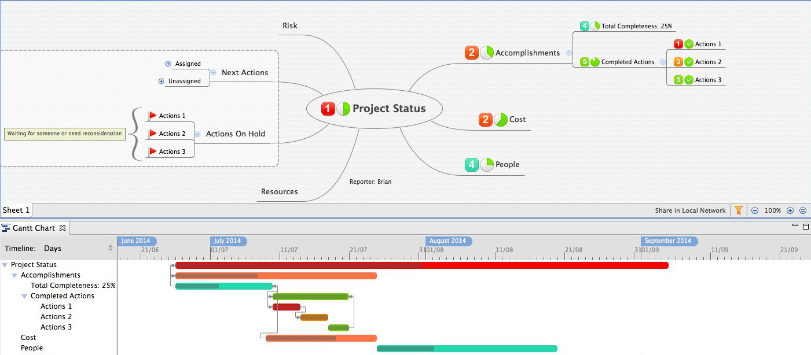
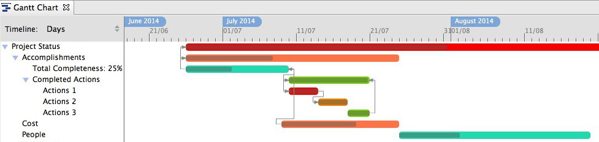

ガントチャート
タスク情報ビュー で、すべてのタスクの詳細を追加した後は、 ガント チャートビュで表示できます。メニューから、[表示]→[ガントチャート]を選択してください。
ガントチャートビュー
画面の上半分はマインド マップで、下部半分はガント チャートビューです。ガント チャートは、常に現在のマインド マップでタスク情報を示します。そのため、見ているマップ、シート、ドリルダウンしたトピックによって、その内容は変更されます。
ガントチャートビューには、ツリースタイルのタスクリストと、時間目盛り付きのタスクバービューの二つの部分からなります。バービューにおいて、異なる色は異なる優先順位を意味します。2 つのタスク間の線は、 2 つのタスクが依存関係を持つことを意味します。
タスクの操作は、次のようにします。
- タイムライン スケールを、時間、日、週、月のいずれかに変更します。
- タスクにマウスを移動すると、開始/終了日、優先度、状態などの詳細を表示します。
- タスクの選択と移動、開始/終了日を変更することができます。
- タスクの一方の端を選択して移動し、その処理時間を変更することができます。
- タスクの開始または終了の小さな輪を選択し、いずれかのタスクにリンクすることができます。それらの間の依存関係を設定できます。
メモ: 依存関係の種類
- 終了 − 開始 タスク A はタスク B を終了するまで開始できません。
- 開始 − 終了 タスク A はタスク B が開始されるまで終了できません。
- 開始 − 開始 タスク B が開始されるまで開始できません。
- 終了 − 終了 タスク A はタスク B を終了するまで終了できません。